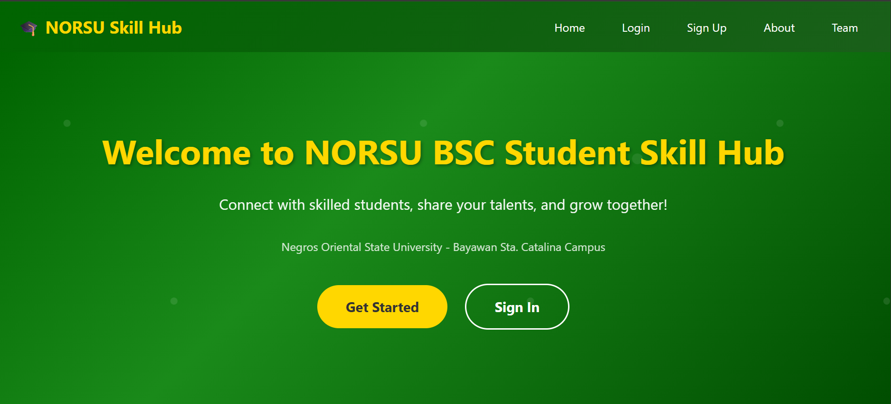

Desktop Application
NORSU Student Skill Hub
A Java desktop system where NORSU students can register, list their skills, and browse other students' profiles. It uses a MySQL database for storing accounts and skill records, with a simple Swing interface for adding and searching entries.